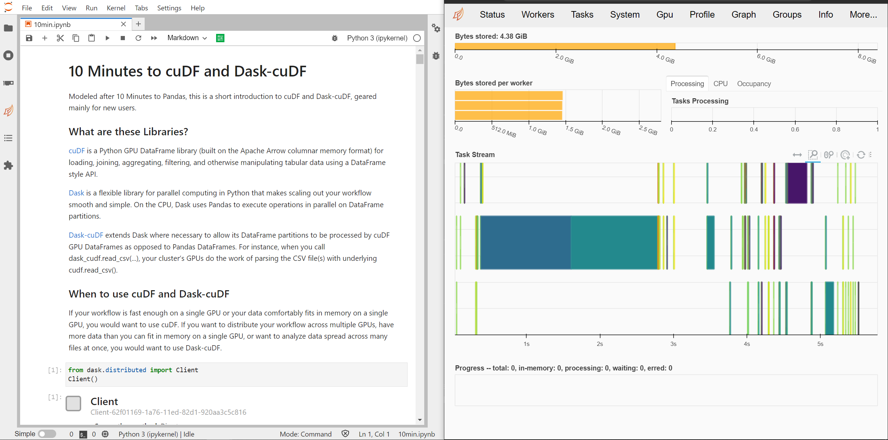

Dask Helm Chart#
Dask has a Helm Chart that creates the following resources:
1 x Jupyter server (preconfigured to access the Dask cluster)
1 x Dask scheduler
3 x Dask workers that connect to the scheduler (scalable)
This helm chart can be configured to run RAPIDS by providing GPUs to the Juptyter server and Dask workers and by using container images with the RAPIDS libraries available.
Configuring RAPIDS#
Built on top of the Dask Helm Chart, rapids-config.yaml file contains additional configurations required to setup RAPIDS environment.
# rapids-config.yaml
scheduler:
image:
repository: "rapidsai/rapidsai-core-nightly"
tag: "23.04-cuda11.5-runtime-ubuntu20.04-py3.10"
env:
- name: DISABLE_JUPYTER
value: "true"
worker:
image:
repository: "rapidsai/rapidsai-core-nightly"
tag: "23.04-cuda11.5-runtime-ubuntu20.04-py3.10"
dask_worker: "dask_cuda_worker"
replicas: 3
env:
- name: DISABLE_JUPYTER
value: "true"
resources:
limits:
nvidia.com/gpu: 1
jupyter:
image:
repository: "rapidsai/rapidsai-core-nightly"
tag: "23.04-cuda11.5-runtime-ubuntu20.04-py3.10"
servicePort: 8888
# Default password hash for "rapids"
password: "argon2:$argon2id$v=19$m=10240,t=10,p=8$TBbhubLuX7efZGRKQqIWtw$RG+jCBB2KYF2VQzxkhMNvHNyJU9MzNGTm2Eu2/f7Qpc"
resources:
limits:
nvidia.com/gpu: 1
[jupyter|scheduler|worker].image.* is updated with the RAPIDS “runtime” image from the stable release,
which includes environment necessary to launch run accelerated libraries in RAPIDS, and scaling up and down via dask.
Note that all scheduler, woker and jupyter pods are required to use the same image.
This ensures that dask scheduler and worker versions match.
[jupyter|scheduler|worker].env is required as of current release as a workaround for limitations in the image.
Will be removed in the future.
[jupyter|worker].resources exlicitly requests a GPU for each worker pod and the Jupyter pod, required by many accelerated libraries in RAPIDS.
worker.dask_worker is the launch command for dask worker inside worker pod.
To leverage the GPUs assigned to each Pod the dask_cuda_worker command is launched in place of the regular dask_worker.
If desired to have a different jupyter notebook password than default, compute the hash for <your-password> and update jupyter.password.
You can compute password hash by following the jupyter notebook guide.
Installing the Helm Chart#
$ helm repo add dask https://helm.dask.org
$ helm repo update
$ helm install rapids-release dask/dask -f rapids-config.yaml
This will deploy the cluster with the same topography as dask helm chart, see dask helm chart documentation for detail.
Note
By default, the Dask Helm Chart will not create an Ingress resource.
A custom Ingress may be configured to consume external traffic and redirect to corresponding services.
For simplicity, this guide will setup access to the Jupyter server via port forwarding.
Running Rapids Notebook#
First, setup port forwarding from the cluster to external port:
# For the Jupyter server
$ kubectl port-forward --address 127.0.0.1 service/rapids-release-dask-jupyter 8888:8888
# For the Dask dashboard
$ kubectl port-forward --address 127.0.0.1 service/rapids-release-dask-scheduler 8787:8787
Open a browser and visit localhost:8888 to access Jupyter,
and localhost:8787 for the dask dashboard.
Enter the password (default is rapids) and access the notebook environment.
Notebooks and Cluster Scaling#
Now we can verify that everything is working correctly by running some of the example notebooks.
Open the 10 Minutes to cuDF and Dask-cuDF notebook under cudf/10-min.ipynb.
Add a new cell at the top to connect to the Dask cluster. Conveniently, the helm chart preconfigures the scheduler address in client’s environment.
So you do not need to pass any config to the Client object.
from dask.distributed import Client
client = Client()
client
By default, we can see 3 workers are created and each has 1 GPU assigned.

Walk through the examples to validate that the dask cluster is setup correctly, and that GPUs are accessible for the workers. Worker metrics can be examined in dask dashboard.

In case you want to scale up the cluster with more GPU workers, you may do so via kubectl or via helm upgrade.
$ kubectl scale deployment rapids-release-dask-worker --replicas=8
# or
$ helm upgrade --set worker.replicas=8 rapids-release dask/dask